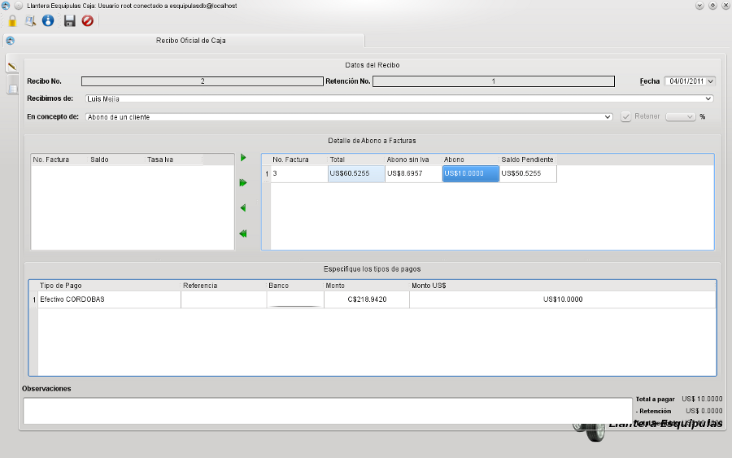

MIS Esquipulas Caja: Recibos
Este modulo registra los recibos de caja para compras hechas al credito y los abonos totales o parciales de un cliente a la empresa, para poder realizar un recibo
deben de existir clientes morosos, sino la interfaz mostrara un mensaje indicando que no existen clientes con cuentas pendientes y no se puede proceder a elaborar este documento.
Para realizar un recibo, debe elegir el cliente para poder observar las facturas pendientes y elegir cuales seran canceladas con este pago, en la parte inferio tiene la opcion
de realizar un abono con multiples tipos de pagos como, tarjetas de credito, transacciones, efectivo, cheques, depositos, luego debe indicar la cantidad respectiva al tipo
de pago.
Por ejemplo un cliente tiene una deuda de C$1000, perfectamente puede cancelar esta deuda de la siguiente manera:
- Tarjeta de Credito=C$500
- Efectivo=C$100
- Deposito=C$400
 Recibos para facturas al Credito